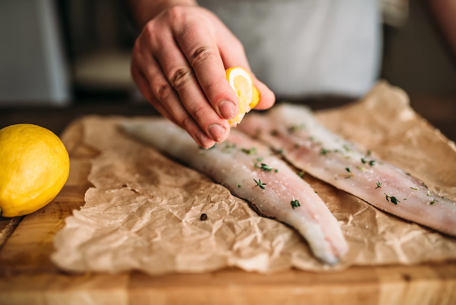
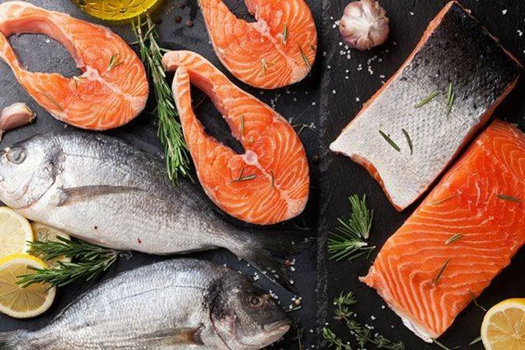

Սաղմոն
Համեղ և արագ
Նախապատրաստում 20 րոպե Պատրաստում 25 րոպե 4 անձի համար Բաղադրամասեր
- 600գ սաղմոն, բաժանել 4 մասի
- 600 գ բաթաթ
- 16 սունկ
- 4 սմ թարմ կոճապղպեղ
- 8 ճաշի գդալ սոյայի սոուս
- 4 ճաշի գդալ ռեփի ձեթ
- Համեմ
Պատրաստում
- Քաղցր կարտոֆիլը մաքրել և կտրարել փոքր խորանարդիկների:
- Սունկը մաքրել, կտրատել։
- Կոճապղպեղը մաքրել, բարակ շերտերով կտրատել։
- Կտրել 4 թերթ մագաղաթյա թուղթ:
- Տարածել քաղցր կարտոֆիլը, ապա սունկը և դնել սաղմոնի սթեյքերը:
- Յուրաքանչյուր սթեյքին ավելացնել 2 ճաշի գդալ սոյայի սոուս և մեկ ճաշի գդալ ռեփի ձեթ կամ ցանկացած այլ բուսայուղ:
- Շաղ տալ կոճապղպեղը և համեմը։
- Փակեք յուրաքանչյուր թուղթ նվերի նման:
- Ջեռոցում 180°-ում 30 րոպե։
Հնարք
Պատրաստման այս եղանակով քաղցր կարտոֆիլը կարող է կիսաեփ մնալ։ Եթե դա ձեզ անհանգստացնում է, և նաև վերջնական ուտեստի պատրաստումն արագացնելու համար, կարող եք քաղցր կարտոֆիլը նախորոք 10 րոպե եփել ջեռոցում։
Սննդային տեղեկատվություն 1 անձի համար՝
Կալորիաներ՝ 397 կկալորիա | Ածխաջրեր՝ 32 գ | Սպիտակուցներ՝ 39 գ | Ճարպեր՝ 12 գ | Հագեցած ճարպեր՝ 2 գ | Պոլիչհագեցած ճարպեր՝ 5 գ | Մոնոչհագեցած ճարպեր՝ 4 գ | Մանրաթել՝ 5գ | Վիտամին C՝ 4 մգ | Վիտամին D՝ 1 մկգ | Վիտամին E՝ 1մգ | Վիտամին K՝ 3 մկգ| Կալցիում` 68 մգ | Երկաթ՝ 3 մգ